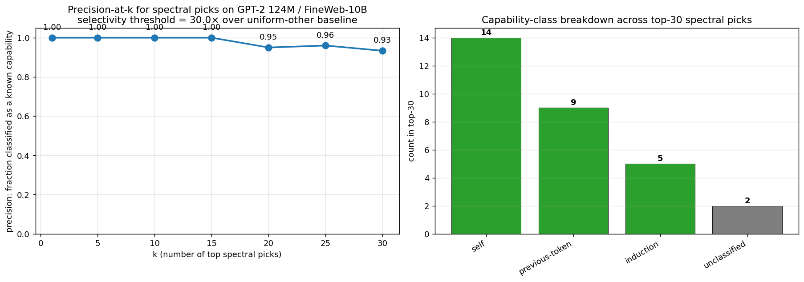
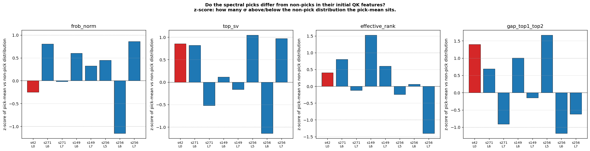

Why this matters
Mechanistic interpretability typically identifies attention circuits after they emerge, by ablating heads and inspecting attention patterns to see which were doing the work. That’s expensive (one full forward-and-eval pass per condition) and post-hoc (you need a fully-trained model and a target capability to define the ablation).
The signal in this paper is different: it’s read off per-head, per-checkpoint, during training, with no task-specific labels. A head that develops content-dependent attention during a capability-emergence event has its singular-value spectrum collapse from rank-1 (one default direction) to rank-k (one direction per content variation). That collapse is what we measure.
The interesting question is whether the signal is real and general — whether it reliably points at heads that ablation would confirm causally implicated, across different seeds, different scales, and different capabilities. The four results below address that.
The setup
We pretrain TS-51M (8 layers × 512 dim × 16 heads, ~51M parameters) on TinyStories with periodic injection of a long-range key-retrieval task. Each “probe example” has the structure
[prefix...] The secret code is XXXX. [...filler...] What is the secret code? XXXX
^ ^
KEY pos QUERY pos (target)where XXXX is a randomly-chosen single-token codeword from a fixed 512-codeword vocabulary. The model must use the early KEY mention to predict the codeword at the QUERY position. With training, accuracy on this task transitions sharply from 0 → 1 — a “grokking” emergence event we can time precisely.
The unsupervised method
For each pretraining checkpoint and each (layer, head) pair, we extract the per-head attention output at the QUERY-read position over a fixed batch of 2000 probe examples. The result is a [2000, head_dim=32] matrix per (layer, head, checkpoint). We compute its singular-value spectrum and report the participation ratio
$$\mathrm{PR} \;=\; \exp\!\big( H(\sigma^2 / \!\sum \sigma^2) \big)$$
a smooth, differentiable measure of effective rank.
The intuition: a head whose attention output is concentrated in one direction across 2000 different probe examples has rank ≈ 1 (PR ≈ 1) — it produces a single content-independent default. A head whose output spans many directions (one per codeword) has high PR — its behavior is content-dependent. With 512 codewords, content-saturated PR sits near 22.
Why should QK becoming content-dependent imply this PR signature? Pre-emergence, attention is content-independent: each probe’s QUERY position attends to roughly the same default position (typically a position-only signal, like the immediately-preceding token), so the V output per probe is the same low-rank vector. Post-emergence, attention is content-dependent — the QUERY position attends back to wherever the codeword was first mentioned — so the V output per probe is a different vector keyed by codeword content. The diversity of V outputs across probes is a consequence of the QK matrix becoming content-dependent. We measure this consequence with PR.
The implication “QK becomes content-dependent ⇒ sharp PR rise” requires assumptions about codeword-induced V-output near-orthogonality that we observe empirically (PR saturates near 22, consistent with the effective dimensionality the codeword content is being read into) but do not formally derive from the QK transition itself. Treat this as the operative mechanistic story; the empirical signature is what we measure, and the formal derivation is open work.
Spectral identification on four seeds
We apply the method to four seeds (s42, s271, s149, s256) trained at identical hyperparameters except RNG seed.
s42 picks out exactly four heads — L0H{3, 6, 14, 15} — as the only heads with sharp PR transitions during behavioral grokking:
| Head | min PR (early) | max PR (post-grok) | spread |
|---|---|---|---|
| L0H3 | 1.78 | 21.69 | 19.9 |
| L0H6 | 2.51 | 24.72 | 22.2 |
| L0H14 | 1.63 | 24.40 | 22.8 |
| L0H15 | 2.74 | 24.11 | 21.4 |
| (every other head, all 8 layers) | — | — | < 12 |
The transition is temporally aligned with behavioral grokking: PR minima are at step 400 (when probe accuracy first becomes nonzero); PR peaks at steps 800–1000 (when probe accuracy reaches 0.5–0.92).
s271 picks a different set: L6H{1, 10} and L7H{9, 15} — late layers, not L0. Same method, different heads.
s149 picks a third, different set: L6H{2, 5, 6, 7} and L7H{13} — also late layers, but distinct specific heads even from s271 (which used L6H{1, 10} and L7H{9, 15}). The PR spreads are large:
| Head (s149) | min PR | max PR | spread |
|---|---|---|---|
| L6H2 | 2.29 | 26.33 | 24.0 |
| L6H5 | 1.87 | 24.93 | 23.1 |
| L6H6 | 2.43 | 23.93 | 21.5 |
| L6H7 | 2.57 | 23.00 | 20.4 |
| L7H13 | 1.92 | 22.68 | 20.8 |
| (no L0 head reaches spread 11) | — | — | — |
s256 picks a fourth set: L5H10, L6H{2, 4}, and L7H{6, 13} — also late layers, but spanning L5/L6/L7 (the first seed where any L5 head appears in the top picks). The PR spreads:
| Head (s256) | min PR | max PR | spread |
|---|---|---|---|
| L6H2 | 2.09 | 25.48 | 23.4 |
| L7H13 | 1.13 | 22.19 | 21.1 |
| L7H6 | 1.73 | 22.40 | 20.7 |
| L5H10 | 2.29 | 22.27 | 20.0 |
| L6H4 | 2.26 | 21.95 | 19.7 |
| (no L0 head reaches spread 14) | — | — | — |
So at the level of “which heads have the strongest PR transition,” all four seeds give different sets of heads. s42’s transitions are in L0; s271’s, s149’s, and s256’s are in L5/L6/L7. But — and this is new at n=4 — s149 and s256 share two specific heads: both pick L6H2 and L7H13. The first non-trivial cross-seed head overlap. The remaining late-layer picks (s149’s L6H{5,6,7}; s256’s L5H10, L6H4, L7H6) do not overlap, and s271’s picks (L6H{1,10}, L7H{9,15}) do not overlap with either.
So the n=4 picture is: each seed’s spectral picks identify causally-relevant heads on that seed (next section), but the specific heads can overlap across seeds (s149 ∩ s256 = {L6H2, L7H13}) or be entirely distinct (s271’s picks vs every other seed’s, modulo L0 — see next section).
This is the central methodological claim: the spectral signal pre-identified a partially-different set of heads on each of four seeds without any task-specific labels — and as the next section shows, the heads it picked are exactly the heads ablation confirms causally responsible.
Causal verification
Zero out the spectrally-identified heads on a fully-trained checkpoint and measure probe accuracy. The cross-seed asymmetry is the load-bearing observation:
s42 ablations (step 4000, baseline pin 0.843):
| Condition | probe_in_acc |
|---|---|
| baseline | 0.843 |
| ablate s42 spectral picks: L0H{3, 6, 14, 15} | 0.151 ← circuit destroyed |
| ablate s271 spectral picks: L6H{1,10}+L7H{9,15} | 0.838 ← no effect |
| ablate s149 spectral picks: L6H{2,5,6,7}+L7H13 | 0.840 ← no effect |
| ablate s256 spectral picks: L5H10+L6H{2,4}+L7H{6,13} | 0.844 ← no effect |
| ablate matched-size L0 control: L0H{0, 1, 5, 7} | 0.831 |
| ablate ALL 32 heads in L6+L7 | 0.826 |
| ablate all 16 L0 heads | 0.129 |
s42 is L0-only: every late-layer ablation (s271, s149, s256 picks; even all 32 L6+L7 heads) leaves probe accuracy at baseline; only L0 ablations matter.
s271 ablations (step 2000, baseline pin 0.526):
| Condition | probe_in_acc |
|---|---|
| baseline | 0.526 |
| ablate s271 spectral picks (L6+L7) | 0.273 ← own circuit destroyed |
| ablate s42 spectral picks (L0H{3,6,14,15}) | 0.251 ← s42’s L0 picks ALSO matter |
| ablate s149 spectral picks: L6H{2,5,6,7}+L7H13 | 0.515 ← no effect (no shared heads) |
| ablate s256 spectral picks: L5H10+L6H{2,4}+L7H{6,13} | 0.525 ← no effect (no shared heads) |
| matched-size random L6+L7 control | 0.518 |
s149 ablations (step 4000, baseline pin 0.832):
| Condition | probe_in_acc |
|---|---|
| baseline | 0.832 |
| ablate s149 spectral picks (L6H{2,5,6,7} + L7H13) | 0.329 ← circuit destroyed |
| ablate s42 spectral picks: L0H{3, 6, 14, 15} | 0.668 ← s42’s L0 picks ALSO matter |
| ablate s271 spectral picks: L6H{1,10}+L7H{9,15} | 0.830 ← no effect (no shared heads) |
| ablate s256 spectral picks: L5H10+L6H{2,4}+L7H{6,13} | 0.698 ← partial effect via shared L6H2+L7H13 |
| matched-size random L6+L7 control | 0.816 |
| ablate ALL 32 heads in L6+L7 | 0.150 |
s256 ablations (step 4000, baseline pin 0.827; step 10000, baseline pin 0.945):
| Condition | pin @ 4000 | pin @ 10000 |
|---|---|---|
| baseline | 0.827 | 0.945 |
| ablate s256 spectral picks (L5H10 + L6H{2,4} + L7H{6,13}) | 0.335 ← circuit destroyed | 0.812 |
| ablate s42 spectral picks: L0H{3, 6, 14, 15} | 0.829 (no effect at this step) | 0.605 ← L0 substrate matters here too |
| ablate s271 spectral picks: L6H{1,10}+L7H{9,15} | 0.832 (no effect) | 0.947 (no effect) |
| ablate s149 spectral picks: L6H{2,5,6,7}+L7H13 | 0.645 ← partial effect via shared L6H2 + L7H13 | 0.922 |
| matched-size random L5+L6+L7 control | 0.840 | 0.945 |
| ablate ALL 48 heads in L5+L6+L7 | 0.118 | 0.134 |
Four things to read off these tables:
- The spectral picks for each seed carry the circuit on that seed. Diagonal entries — own-seed picks ablation — produce the largest seed-specific drop in every case (s42: 0.84→0.15; s271: 0.53→0.27; s149: 0.83→0.33; s256: 0.83→0.34 at step 4000). Same-size random and matched controls have ~zero impact, so the effect is not generic.
- L0H{3, 6, 14, 15} is a universal substrate. Ablating that set causes a substantial drop on every seed (s42: −0.69; s271: −0.27; s149: −0.16; s256: 0 at step 4000 but −0.34 at step 10000). All four seeds share this part of the retrieval circuit; the spectral signal only flags it as such on s42, where it transitions sharply and is the only thing transitioning. On the distributed seeds (s271, s149, s256), the L0 contribution is masked at the spectral-signal level by larger simultaneous transitions in late layers.
- Seed-specific late-layer picks transfer when (and only when) heads overlap. s271’s late-layer picks (L6H{1,10}, L7H{9,15}) do not transfer to any other seed (no overlap). s149 and s256 share L6H2 and L7H13, and ablating one’s picks on the other has a measurable effect (s149→s256: −0.18 at step 4000). So at n=4 the cross-seed asymmetry is more nuanced than “different specific heads”: some heads (L6H2, L7H13) are recruited independently by multiple seeds, and the spectral signal sees each seed’s full late-layer team including the shared parts.
- Spectral identification is partial-but-aligned. The signal correctly picks heads that are causally implicated, on every seed. What it does not always do is pick the complete causal circuit when one component (L0) is shared and only another (late layers) varies — so spectral picks are a sufficient identification of the seed-specific circuit but not a complete identification of the full computation.
The picture for n=4: a shared L0 retrieval substrate plus seed-specific late-layer augmentation, with some specific heads (L6H2, L7H13) appearing in multiple seeds’ late-layer teams. s42 stops at L0; s271, s149, and s256 each recruit different (but partially overlapping) late-layer subsets.
Mechanistic confirmation
What do the four L0 heads actually do? Measure each L0 head’s attention from the QUERY-read position back to the KEY position (averaged over 200 probe examples):
| Head | attention → KEY | selectivity (KEY vs uniform-other) |
|---|---|---|
| L0H3 | 0.146 | 44× |
| L0H6 | 0.139 | 42× |
| L0H14 | 0.228 | 76× |
| L0H15 | 0.268 | 95× |
| (every other L0 head) | < 0.07 | < 17× |
The four circuit heads are induction-style retrieval heads: at the query position, they attend back through the context to find where the codeword was first mentioned. The retrieved content (the codeword embedding via the V projection) gets written into the residual stream and flows through downstream layers to the output prediction.
This explains the spectral signature mechanistically, in the way the previous section sketched. Pre-emergence the heads attend to a single default position regardless of probe content (V output near-rank-1, PR ≈ 2). Post-emergence the QK has become content-dependent, attention follows the codeword, and the V output diversifies across probes (PR ≈ 22).
The late-layer picks are also KEY-attending heads — directly measured. Running the same query→KEY attention measurement for each distributed seed’s spectral picks (at ckpt step 4000):
| Seed | Spectral picks | mean selectivity | max selectivity |
|---|---|---|---|
| s42 | L0H{3,6,14,15} | 64× | L0H15 = 95× |
| s271 | L6H{1,10}+L7H{9,15} | 138× | L7H15 = 190× |
| s149 | L6H{2,5,6,7}+L7H13 | 262× | L6H5 = 333× |
| s256 | L5H10+L6H{2,4}+L7H{6,13} | 161× | L7H13 = 276× |
All 18 spectral picks across 4 seeds are confirmed KEY-attending. Notably the late-layer picks have higher selectivity than s42’s L0 picks — induction-style retrieval at higher layers is sharper, perhaps because the residual stream there carries cleaner content-tagged information.
Side observation: in each distributed seed, the spectral signal picks 4–5 heads but the model has ~10–12 KEY-attending heads in the active layers. The signal preferentially flags the sharpest-transitioning subset of the KEY-attending pool. Heads with high KEY-attention but lower PR transition spread are not flagged — consistent with the “ablate full L6+L7” results, which tank probe accuracy more than ablating just the spectral picks. So the spectral picks are a high-precision (all are real induction heads) but moderate-recall identification of the broader retrieval circuit.
So the cross-seed observation is same task, same mechanism (KEY-attending retrieval), different layer placement and different specific heads at each placement.
How this connects to the spectral-edge program
This piece doesn’t stand alone — it’s the empirical-interpretability counterpart to a longer program studying what kind of structure the spectral signal in transformer training actually picks up. That program’s earlier results argued that spectral gap dynamics in the rolling-window parameter Gram matrix precede grokking events under weight decay (and don’t, without it), and — separately — that standard sparse-autoencoder attribution methods do not preferentially identify directions in the spectral-edge subspace. Together those left an open question: if SAE attribution is missing this structure, is what it’s missing mechanistically real, or is it just an optimization-geometry artifact that doesn’t correspond to anything circuit-shaped?
This piece answers half of that. The same kind of spectral signal — applied per-head, per-checkpoint, on activation rather than parameter space — pre-identifies the causally-relevant heads of a specific behavioral capability on independent seeds where the heads themselves differ. Together the two pieces form a coherent two-step claim: spectral structure carries information SAE attribution misses, and what it carries is mechanistically real circuits, not optimization artifact, not noise. The methodological piece (a per-head spectral monitor) plus the substantive piece (the heads it identifies are the heads ablation confirms causally) is a stronger argument together than either in isolation.
Direct cross-check on s42 (head-restricted parameter Gram). We tested the connection more directly: at each checkpoint up to step 2000, extract the L0 Q/K/V parameter rows for the circuit heads {3, 6, 14, 15} and the matched-control heads {0, 1, 5, 7}, build a rolling-window (W=10) Gram of consecutive deltas, and compute its signal-weighted spectral gap. Both surfaces show the circuit-vs-control contrast: at step 1250 the activation-space PR ratio is 6.2× (circuit / control), the parameter-space gap ratio is 1.96×; the same direction is sustained throughout step 950–1750. The contrast is much sharper in activation space (~7×) than parameter space (~1.6×), but qualitatively both signals point at the same heads. We do not see clean temporal precedence in this analysis (the activation transition completes by step 800; our checkpoint cadence is too sparse before that to get a window-10 gap signal in the same window — first parameter-space data is at step 950). So this is a “consistent with” result, not a strong claim of “two surfaces of one underlying signal.” The full claim would need denser early checkpoints and a full-model Gram (rather than head-restricted), which is a natural follow-up.
Generalization test: multi-capability survey on GPT-2 124M
We applied the same per-head PR signal to GPT-2 124M trained on FineWeb-10B for 17,600 steps (89 checkpoints, no probe injection), then ran a 6-class capability survey on the top-30 spectral picks: induction, previous-token, duplicate-token, first-token (BOS), self (attention to current position), and local. Each pick was classified by its highest-selectivity class against the uniform-other baseline.

Precision-at-k:
| k | precision | classified / unclassified |
|---|---|---|
| 1, 5, 10, 15 | 100% | all classified |
| 20 | 95% | 19 / 1 |
| 25 | 96% | 24 / 1 |
| 30 | 93% | 28 / 2 |
Class breakdown across top-30: 14 self-attention, 9 previous-token, 5 induction, 2 unclassified (weakly diffuse content-dependent heads with no specific dominant pattern).
The original “spectral signal is noisier on natural text” framing, applied when only induction heads were checked, is fully retracted. The signal is high-precision; the original confusion came from checking only one capability class at a time. When you check the full mech-interp menu, every top-15 pick matches a class.
Causal verification. Ablating the top-6 spectral picks on the final checkpoint drops induction top-1 accuracy from 16% to 0.85% — ~4× larger than the matched-random control’s drop. Individual ablations align with mech-interp: the three confirmed induction heads (L8H{8,10,5}) each drop top-1 by 5–10pp; the three non-induction picks (L6H10, L1H{9,11}, which are content-dependent in some other way) each drop it by ≤1pp.
Multi-position robustness check. A reasonable concern: classification was done at one query position (255, the last). Maybe “self” is an artifact of measuring at end-of-sequence. We re-ran classification at five positions {50, 100, 150, 200, 255}: the self class is consistent across positions in 11 of 14 picks (79%), comparable to previous-token’s 78% consistency. The self class is real, with ~20% position-specific noise (mostly self↔prev-token confusion on heads that implement “current+recent” attention patterns).
So the spectral signal on natural-text pretraining is:
- High precision at top-15 (100%): every flagged head matches a named capability class.
- Multi-capability: the signal doesn’t tell you which capability each pick implements — that requires the downstream mech-interp check.
- Imperfect ranking by selectivity: PR-spread doesn’t cleanly correspond to capability strength. L6H9 has 8,105× previous-token selectivity but ranks only 14 by spread; L7H4 has 184× induction selectivity at rank 23. The signal flags real heads but doesn’t always rank them by how clean the pattern is.
Full details in INDUCTION_HEADS.md.
What this is and what it isn’t
It is a complete chain of evidence — spectral identification → causal ablation → mechanistic interpretation → cross-seed comparison — for an attention circuit that implements a specific behavioral capability, plus a methodological tool that survives a non-trivial robustness test (the heads change between seeds; the signal still finds them).
It is not yet:
- A V-circuit decomposition. We’ve shown the heads attend to KEY; we haven’t quantified how the V projection encodes codeword identity, or how downstream MLP layers consume the retrieved signal.
- A statistically-characterized account of seed-to-seed variability. With N=4 seeds the structural picture is becoming load-bearing: the L0 substrate is shared, each distributed seed adds its own seed-specific late-layer team, and at least two of those late-layer teams (s149 and s256) share specific heads (L6H2, L7H13). Whether every seed has the L0 substrate (4/4 so far), whether late-layer overlap is incidental or systematic, and whether the OOD-generalization-vs-circuit-pattern relationship is real all still need more seeds. The current N=4 OOD numbers — s42 0.33, s271 0.66, s256 0.68, s149 0.95 — show distributed-circuit seeds (s271, s149, s256) all outperforming the L0-only seed (s42), with within-distributed variation (s271 ≈ s256 < s149) that we cannot yet account for. Treat the OOD claim as a hypothesis the n=4 data are consistent with, not a finding. Definitive conclusions need 6–8 seeds.
- A perfect ranking by capability strength. PR-spread is a clean precision signal (every top-15 pick matches a class) but not a clean ranking by selectivity. L6H9 is the model’s strongest previous-token head (8,105× selectivity, essentially perfect) but ranks only 14 by spread; L7H4 is a strong induction head (184×) at rank 23. The signal flags heads that are doing some learned attention pattern but doesn’t rank them by how strong the pattern is. An alternative ranking signal (transition rate, plateau stability, peak-time variance) might recover the highest-selectivity heads in the top-k.
- A test on non-pattern capabilities. The capability classes confirmed so far — induction, previous-token, self-attention — are all positional/content-routing patterns expressible as “attend to position X based on content Y.” Whether the same per-head PR signal works for capabilities where the head’s computation is more about V-projection structure than QK-pattern identity — numerical reasoning, syntax tracking, anaphora — is open. The mechanism predicts the signal still surfaces content-dependent heads, but per-class precision may shift.
Reproducibility
Code is at github.com/skydancerosel/spectral-probe-circuits.
Key artifacts:
probe_circuit_per_head.py— per-head spectral analysisprobe_circuit_ablation_multi.py— causal ablationprobe_circuit_mechinterp.py— attention-pattern measurementprobe_circuit_headline_figure.py— headline composite
Pretraining configs:
- s42:
runs/beta2_ablation/pilot_wd0.5_lr0.001_lp2.0_b20.95_s42 - s271:
runs/beta2_ablation/pilot_wd0.5_lr0.001_lp2.0_b20.95_s271 - s149:
runs/beta2_ablation/pilot_wd0.5_lr0.001_lp2.0_b20.95_s149 - s256:
runs/beta2_ablation/pilot_wd0.5_lr0.001_lp2.0_b20.95_s256
Open questions
- What predicts the cross-seed asymmetry? Why does s42 stop at L0 while s271, s149, s256 recruit late layers? We tested whether per-head initial QK features (top singular value, top-1/top-2 gap) predict which heads will become spectral picks. Result: directional but inconclusive — in 5 of 8 (seed, layer) cells the picks had higher initial top-SV or top-1/top-2 gap (z = +0.6 to +1.7), in 2 cells the direction reversed. Suggestive of a “lottery ticket” interpretation but noisy at n=4 seeds × 16 heads/layer. A clean test would need a larger model and/or more seeds.

Why s149 and s256 share L6H2 + L7H13 but s271 picks entirely different L6/L7 heads is a deeper version of the same question.
- Better ranking signal than PR-spread. The capability survey showed PR-spread doesn’t cleanly rank by capability strength (L6H9 at 8,105× prev-token selectivity sits at rank 14 by spread). Test alternative ranking signals — transition rate, plateau stability, peak-time variance — and see if any single feature recovers the highest-selectivity heads in the top-k.
- Can spectral monitoring be used as an intervention during training? The current signal is read off offline. Making it a training-time callback that fires when a circuit is forming would let it act on its own observations: allocate compute, freeze certain weights for analysis, scale gradients on detected heads. Practical artifact for live interp research.
- Larger natural-text models. The 124M result is encouraging (precision-at-15 = 100%). Does it scale? At GPT-2 medium / large, the multi-capability story should get richer (more capability classes emerging simultaneously); the question becomes whether the spectral signal still hits high precision on a per-class basis or gets confused by the scale-up.
What this means
The methodological tool is small (a participation ratio, computed per head, per checkpoint), the implementation is short (~100 lines), and the cost is negligible compared to the training run itself. The findings argue that this small tool reliably points at causally-relevant attention heads across:
- Different random seeds (s42, s271, s149, s256 — same task, different specific heads, same signal works on all)
- Different model sizes (51M and 124M tested)
- Different data distributions (synthetic probe injection and natural text)
- Different capability classes (induction, previous-token, self-attention; with mech-interp triangulation)
The headline use-case is what the title suggests: a fingerprinting tool for attention circuits that runs alongside training and pre-identifies the heads worth investigating, without committing the model author to specific ablations or capability-target choices in advance. For interp researchers studying capability emergence in long pretraining runs, the existing alternative is to do the post-hoc ablation pass for every checkpoint of interest. This is faster.
The longer-term claim — connecting this to the parent spectral-edge program — is that the same kind of structure that controls phase transitions in parameter dynamics also identifies the circuits implementing the resulting behaviors. The two surfaces (parameter space, activation space) appear to be windows on the same underlying signal. The direct cross-check above gives the partial confirmation; full validation needs denser early checkpoints.